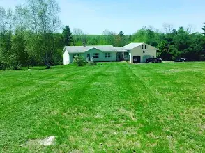
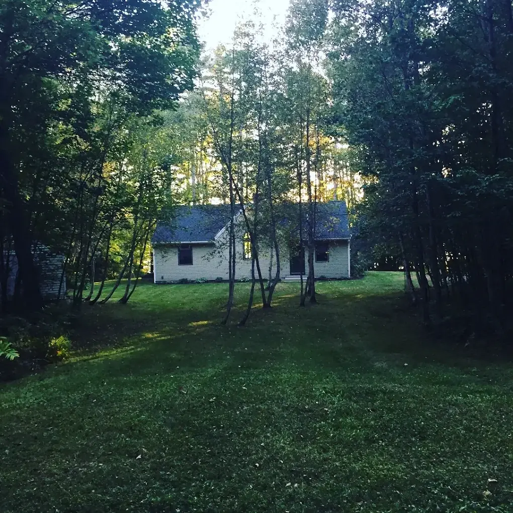
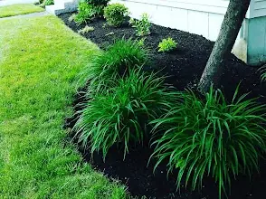
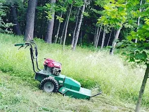

01Lawn care
A fresh cut makes the whole property feel different. Keep your grass neat and your outdoor space ready to enjoy.
Talk lawn care
Lawn care & landscaping · Poland, Maine
Fresh cuts. Clean beds. Room to enjoy it all.
Give your outdoor space the care it deserves.
01 / A little care goes a long way
Keep the lawn in shape, refresh the garden beds, or tackle the cleanup you’ve been putting off. Start with what your property needs.

01A fresh cut makes the whole property feel different. Keep your grass neat and your outdoor space ready to enjoy.
Talk lawn care
02Give your beds a fresh finish and bring the details together. A thoughtful refresh can change the feel of your yard.
Refresh your landscape
03Clear the clutter and make room for what comes next. Discuss the overgrown corners and outdoor jobs on your list.
Plan a cleanup02 / Out in the yard
Real lawns, garden beds, and outdoor spaces from the business’s photo collection.
03 / Keep it straightforward
You don’t need to have every detail figured out. Start with a conversation about the space, the work, and what you want to get out of it.
A local call. A good place to start.Share your town, the service you’re looking for, and the areas that need attention.
Discuss the scope, pricing, and availability before deciding how to move forward.
A tidy lawn, refreshed beds, or a cleared space. Set the plan around what matters to you.
A few things to know
The business is based in Poland, Maine. Call with your property’s town to confirm whether service is available at your location.
Yes. Choose “A few different things” in the inquiry form, or call to discuss your lawn, landscaping, mulching, loaming, or cleanup needs together.
Your property’s town, a brief description of the work, and any helpful photos. You can discuss scheduling and pricing directly.
It prepares a message with your name, town, and chosen service. You can open it in your text messaging app or copy it. Nothing is sent until you send the message yourself.
Your next good yard day
Tell us what needs doing. We’ll take it from there.